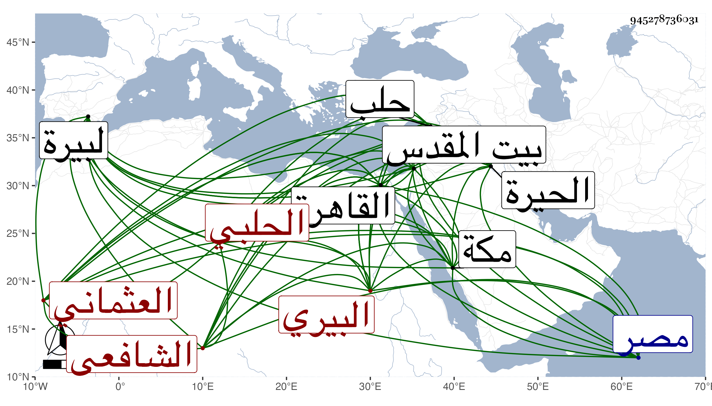

0902Sakhawi.DawLamic.ITO20230111-ara1.EIS1600.945278736031
Biography ID: 945278736031
89
محمد بن أحمد بن محمد بن أحمد بن جعفر بن قاسم الشمس أو عبد الله العثماني البيري ثم الحلبي الشافعي أخو الجمال يوسف الاستادار الآتي . ولد في حدود الستين وسبعمائة بالبيرة وسمع من أبي عبد الله بن جابر وأبي جعفر الغرناطي ولازمهما وحفظ الحاوي الصغير وعرضه على أبي البركات الأنصاري . وولي قضاء الحيرة إلى بعد الفتنة ثم قضاء حلب في سنة ست وثمانمائة ثم عزل ثم أعيد فلما استقر حكم في نيابتها شوش عليه وعزله فتوجه إلى مكة فجاور بها ثم قدم القاهرة في عز أخيه فعظم قدره ، وولي خطابة بيت المقدس بل عين لقضاء مصر ثم ولي بعد الشريف النسابة مشيخة البيبرسية ثم تدريس الشافعي بعد جلال الدين بن أبي البقاء ، وحدث بصحيح البخاري عن شيخه ابن جابر عن المزى سماعا قال شيخنا سمعت أكثره منه وحدث به رفقيا له ، وكان صرف البيبرسية والتدريس لما قتل أخوه ثم أعيدت له البيبرسية خاصة ثم انتزعت منه وقرر في مشيخة سعيد السعداء بعد الشمس البلالي فاستمر فيها حتى مات . وكان ساكنا وقورا لين الجانب . ونحوه قول المقريزي : كان غير عالم لكن يذكر عنه دين مع سكون . وقال ابن خطيب الناصرية : كان إنسانا حسنا دينا ساكنا قليل الشر كثير الثروة . وأرخ وفاته في العشر الثاني من المحرم سنة تسع وعشرين بالقاهرة عن نيف وسبعين سنة . وأرخه شيخنا والعيني في ذي الحجة من التي قبلها فشيخنا في سحر يوم الجمعة رابع عشره والعيني في حادي عشريه . وذكره المقريزي في عقوده وقال : كان فيه سكون ويذكر عنه تدين ولين جانب اجتمعت به مرارا فلم أر إلا خيرا .
